Bienvenue sur mon Portfolio
Passionné par le développement web, l’ingénierie logicielle et la conception de jeux vidéo, j’aime apprendre de nouvelles technologies et créer des projets concrets.
Ce portfolio présente mon parcours, mes compétences, mes projets et mes centres d’intérêt.
2024 — Aujourd’hui
BUT Informatique
Formation universitaire axée sur le développement logiciel, les systèmes informatiques,
les bases de données et l’utilisation d’environnements Linux.
Java
C
SQL
HTML/CSS
Linux Debian
Études
Été 2025
Développement Web
Développement d’un site web pour l’entreprise M.E.I ainsi qu’une assistance
administrative incluant la gestion de documents et de tableaux.
HTML/CSS
JavaScript
Excel
Word
Job d’été
Été 2024
Stage – SNCF Réseau
Contribution à la rédaction d’un dossier technique et participation
à la documentation du pilotage logiciel de l’entreprise.
Word
Adobe Photoshop
Stage
2023 — 2024
École d’ingénieur IG2I
Formation pluridisciplinaire en informatique et ingénierie,
abordant la programmation bas niveau, le développement web et
les systèmes embarqués.
C
HTML/CSS
JavaScript
SQL
PHP
Assembleur
Raspberry Pi
Études
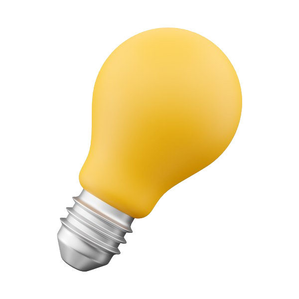 COMPÉTENCES
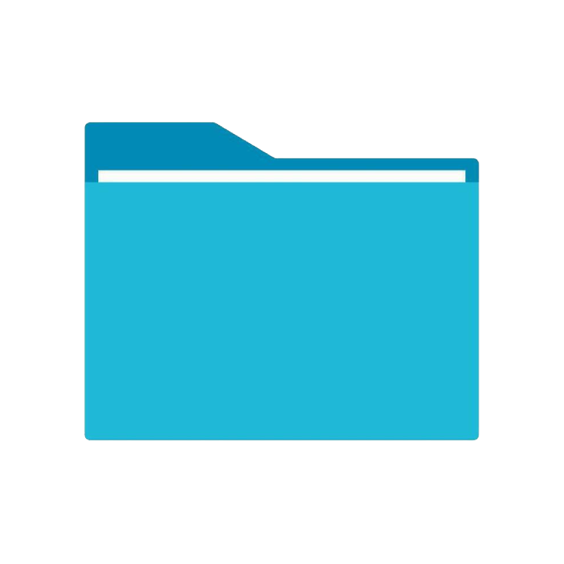
Langages
▶
 HTML
HTML CSS
CSS Javascript
Javascript Java
Java C
C C++
C++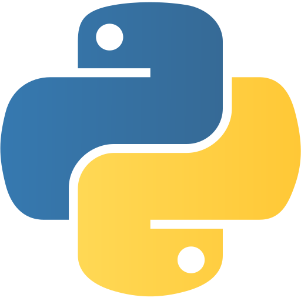Python
 Lua
Lua
Développement Web
▶
 Node.js
Node.js Apache Tomcat
Apache Tomcat
Bases de données
▶
 PostgreSQL
PostgreSQL
Systèmes d'exploitation
▶
 Windows
Windows Android
Android Linux
Linux Debian
Debian Ubuntu
Ubuntu
Design
▶
 Adobe Photoshop
Adobe Photoshop Adobe Premiere
Adobe Premiere Adobe XD
Adobe XD Canva
Canva
Contrôle de version
▶
 Git
Git GitHub
GitHub GitLab
GitLab
Autre
▶
 Markdown
Markdown
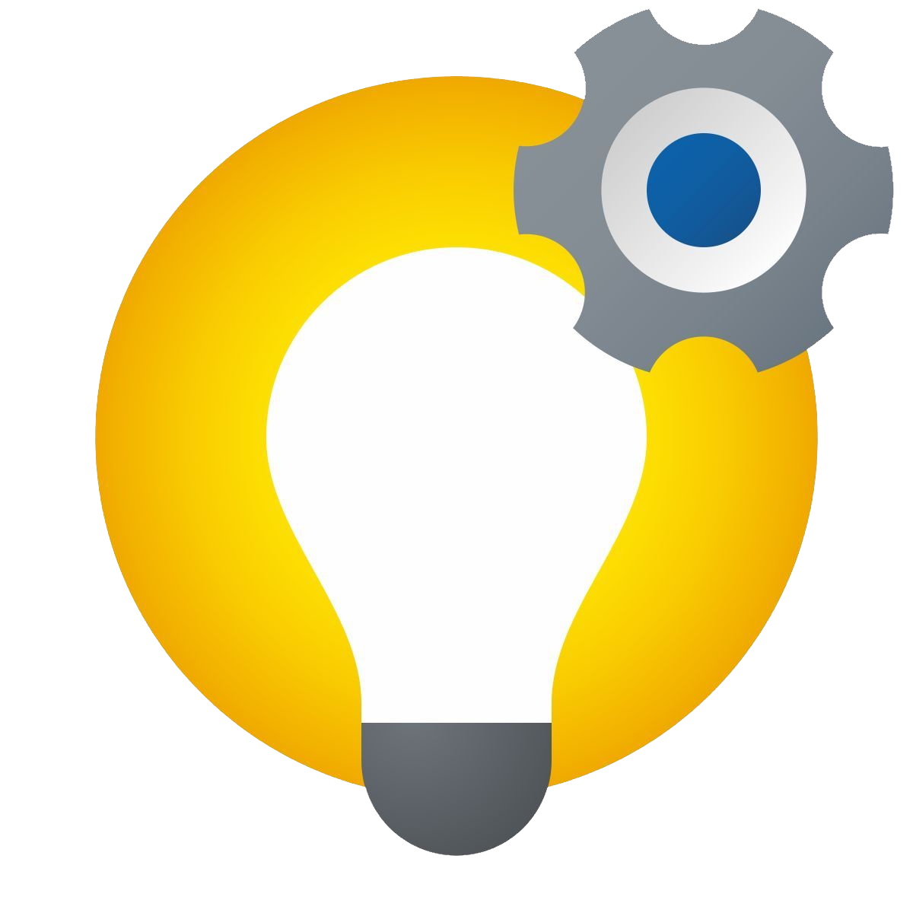 DÉCOUVREZ MES PROJETS
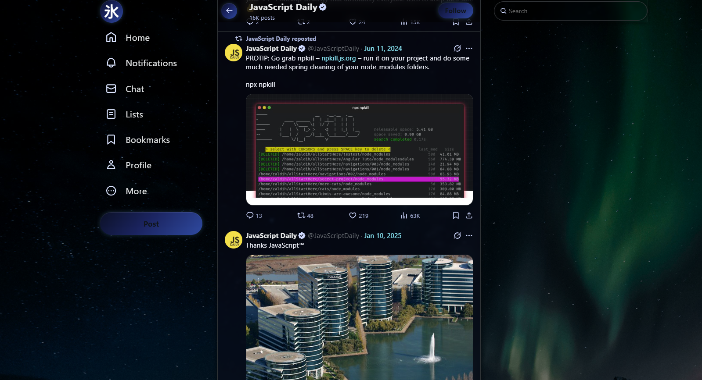
Mizu Twitter

IUT'ERRAIN
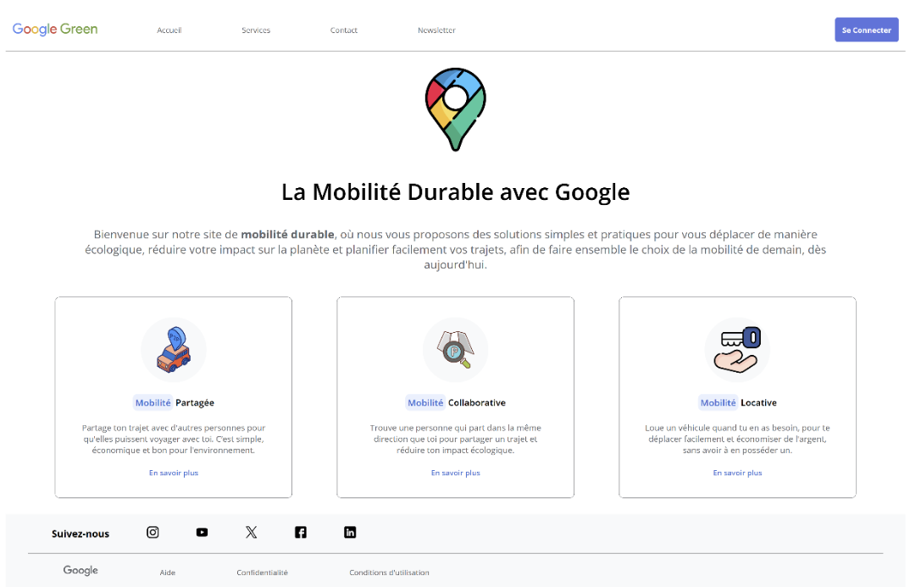
GOOGLE GREEN
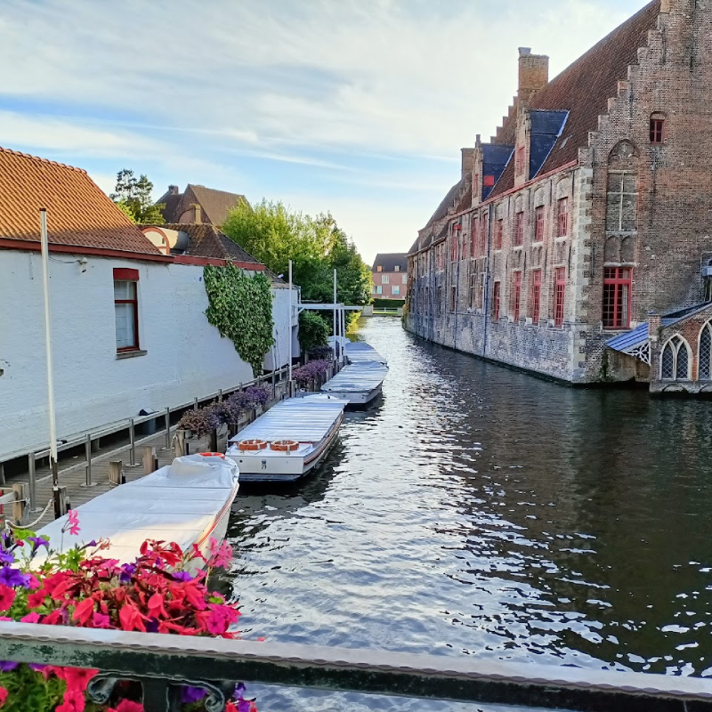
Voyage
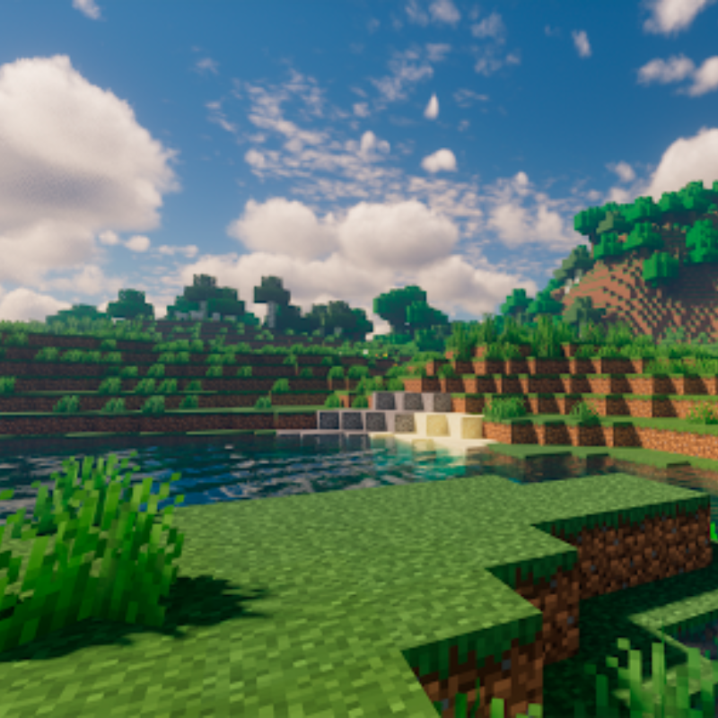
Jeux vidéo
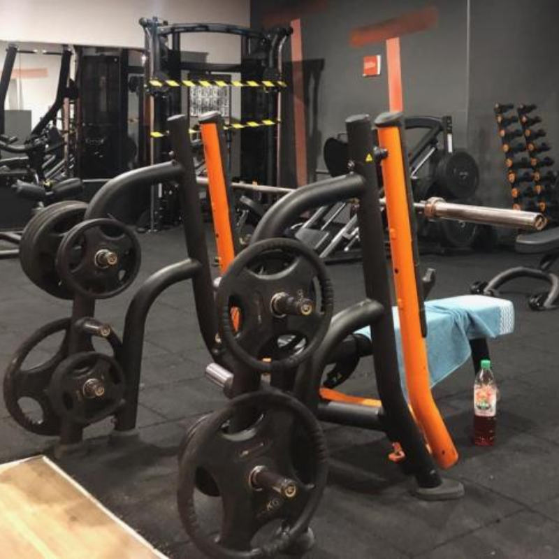
Salle de sport
Montage Photo/Vidéo
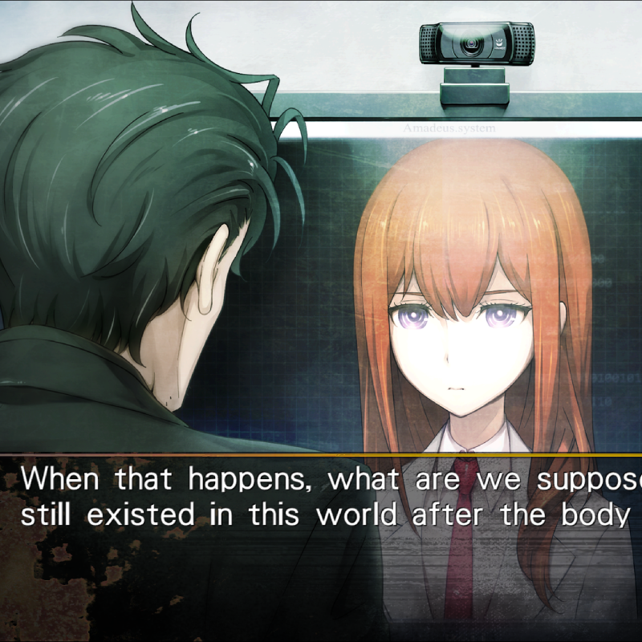
Visual Novels
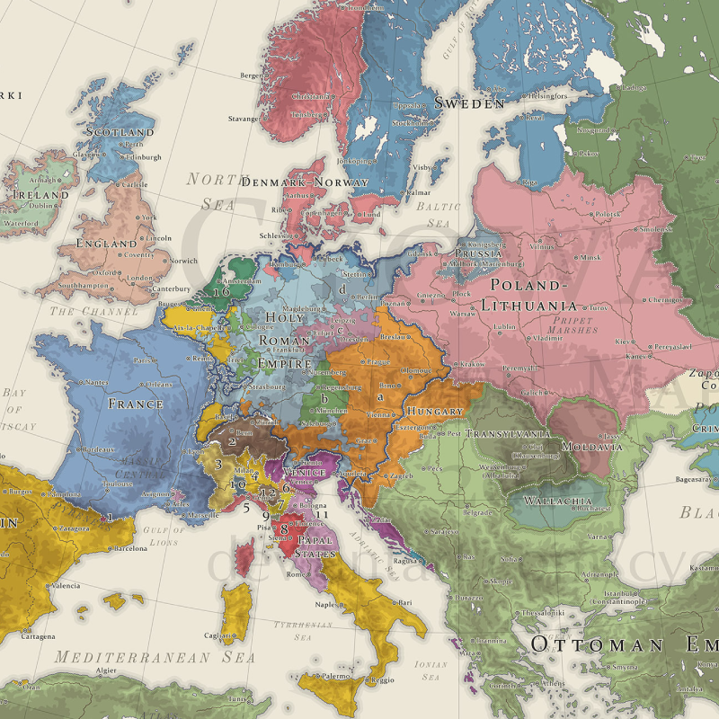
Histoire
EXPLORATEUR DE PROJETS
Mizu Twitter
PROJET PERSONNEL2025-2026
Extension de navigateur pour Twitter qui ajoute des thèmes totalement personnalisables,
masque les éléments superflus et supprime les contenus politiques de votre fil d’actualité.
HTML/CSS
JavaScript
Extension Navigateur
IUT'ERRAIN
PROJET SCOLAIRE2025
Jeu de labyrinthe développé en Java où le joueur doit trouver son chemin de l'entrée jusqu'à la sortie.
Inclut un mode progression et un mode libre laissant le joueur choisir la génération de son labyrinthe
en utilisant des algorithmes de générations et des options différentes.
Java
JavaFX
GOOGLE GREEN
PROJET SCOLAIRE2024
Conception d'un site web statique autour de la mobilité durable en entreprise.
Le projet visait à proposer des solutions facilitant les trajets domicile-travail
afin de réduire l'empreinte carbone d'une entreprise,
avec une interface inspirée de son identité visuelle (ici Google).
HTML
CSS
MINECRAFT REGIMENTS
PROJET PERSONNEL2023-2024
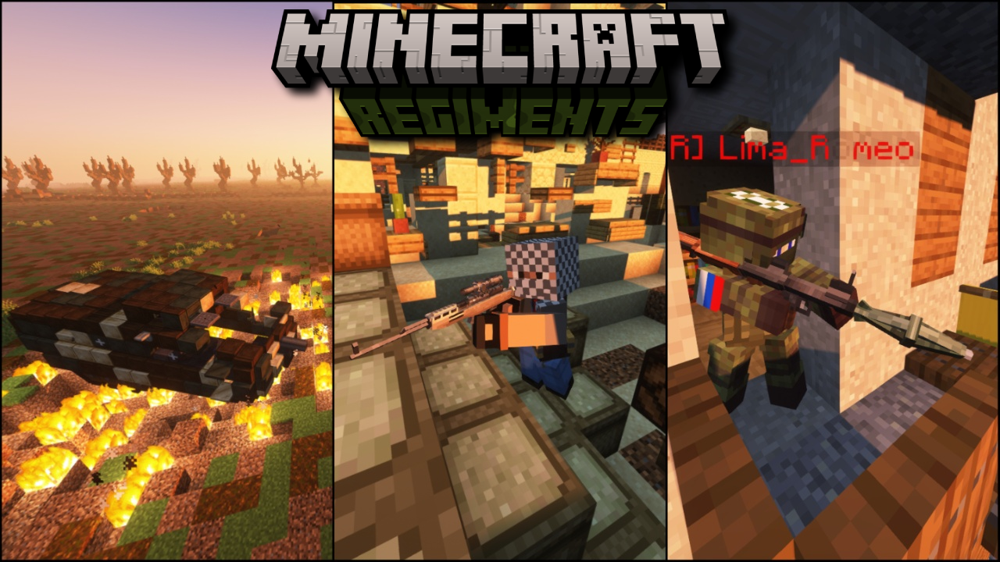
Minecraft Regiments était un serveur moddé francophone dédié au combat et à la simulation militaire.
Il proposait des missions immersives favorisant stratégie, coopération et plaisir de jeu.
Le serveur a rassemblé 150 membres et a généré des milliers de vues sur les réseaux sociaux.
Java
SSH
Plugins
Modding
Optimisation
CODE WARFARE
PROJET PERSONNEL2021

Tower defense développé entièrement en C/C++ from scratch avec la librairie SFML, sans moteur de jeu.
L’ensemble des mécaniques de jeu, de la gestion des tours à l’IA des ennemis,
ainsi que tous les éléments graphiques et logiques, ont été conçus et implémentés manuellement.
C
C++
SFML
OMICRONBOT
PROJET PERSONNEL2020
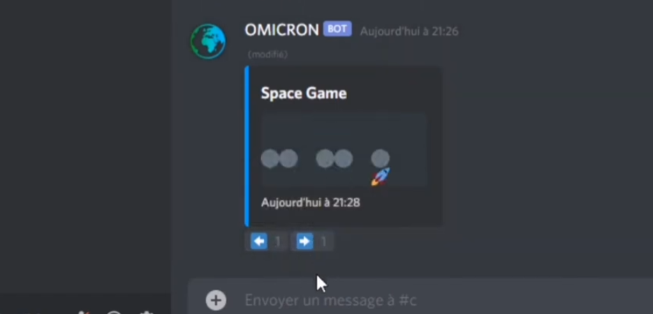
OmicronBot était mon premier bot Discord. Il permettait aux utilisateurs de jouer à plusieurs
à des mini-jeux interactifs sur Discord, comme par exemple le Puissance 4, pierre-feuille-ciseaux,
des jeux de logique, et bien d’autres. Il permettait également d’afficher des statistiques mondiales utiles.
Node JS
Discord API